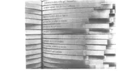
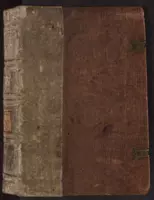

Poetic Science shelf
Your Incredible Cat.pdf
Winning Ways for your mathematical plays.djvu
Why Beauty Is Truth.pdf
What is Life.pdf
Tractus.pdf
Tractatus Logico-Philosophicus.pdf
Timaeus.pdf
The Universe in Zero Words.pdf
The Tower of Hanoi – Myths and Maths.pdf
The Thirteen Books of the Elements, 10 to 13.pdf
The Thirteen Books of the Elements, 03 to 9.pdf
The Thirteen Books of the Elements, 01 and 2.pdf
The sensual (quadratic) form.djvu
The Selfish Gene.pdf
The Secret Life of Pronouns.epub
The Poem of Empedocles.pdf
Theory of Nothing.pdf
The Origin of Species.epub
The order of Time.pdf
The Mystery of Life's Origin.pdf
The Moral Landscape How Science Can Determine Human Values.epub
The Monte Carlo Method.pdf
The kinematics of Machinery.pdf
The Joy of Cats.pdf
The Great Mistake - Relativity.pdf
The Gist of Mathematics.pdf
The Fractal Geometry of Nature.epub
The Fourth Dimension.epub
The Elements of Computing Systems.pdf
The Elegant Universe.pdf
The Doré Bible Gallery.epub
The Cosmographia of Sebastian Munster.pdf
The Colours of Infinity.pdf
The book of Numbers.djvu
The Arts of Seduction.epub
The Art of Seduction.pdf
Surreal Numbers.pdf
Stereographic Projection.djvu
Stellar Structure And Evolution.pdf
Star Maps.pdf
Secrets in Inequalities, Vol. 1 - Basic Inequalities.pdf
Sacred Mathematics - Japanese Temple Geometry.pdf
Sacred Geometry for Artists, Dreamers, and Philosophers Secrets of Harmonic Creation.epub
Remarkable Curves.pdf
Regular algebra and Finite machines.djvu
Reflecting Narcissus - A Queer Aesthetic.pdf
Quran Saheeh.pdf
Quantum Mechanics.djvu
Punchcard Tech Manual.pdf
Poetry of Physics and the Physics of Poetry.pdf
Physics From Symmetry.pdf

Oulipo.pdf
Original Sources of Quran.pdf
On quaternions and octonions their geometry, arithmetic and symmetry.djvu
On numbers and Games.djvu
One, two, three - infinity.djvu
One Sentence Proof.pdf
Notes on Introductory Combinatorics.pdf
Notebooks of Leonardo da Vinci.pdf
Narcissus and Oedipus.pdf
Music and Mathematics - From Pythagoras to Fractals.pdf
Mathnawi of Jalaluldin Vol4.pdf
Mathnawi of Jalaluldin Vol3.pdf
Mathnawi of Jalaluldin Vol2.pdf
Mathnawi of Jalaluldin Vol1.pdf
Mathematical Problems and Proofs Combinatorics, Number Theory, and Geometry.pdf
Masters of Sex.epub
Maps of the Ancient World.pdf
Learn Latin from the Romans.pdf
Last lecture of Galois.pdf
Knots - Adam Adamides.pdf
Knot Book.pdf
Journal of Researches - Voyage of the Beagle.pdf
Journal of Researches into the Geology and Natural History of The Voyage of Beagle.pdf
Illuminating in Micrography - The Catalan Micrography Mahzor.pdf
Human Sexual Response.pdf
Human Sexual Inadequacy.pdf
History of Birds.epub
Hexaflexagons, Probability Paradoxes, and the Tower of Hanoi.pdf
Heraclitus The Cosmic Fragments.pdf
Handbook Of Ornament.pdf
Handbook of Greek Mythology.pdf
Geometric algebra.djvu
Geological Observations on South America.pdf
Game, Set and Math.pdf
Forbidden Sexual Behavior and Morality.pdf
Fooled by Randomness.epub
Fearful symmetry.djvu
Darwins Notebooks, 1836-1844_ Geology, Transmutation of Species, Metaphysical Enquiries.pdf
Darwins camera art and photography in the theory of evolution.pdf
Cubist.epub
Cows in the Maze And Other Mathematical Explorations - Ian Stewart.pdf

Cosmographia.pdf
Concrete Mathematics.djvu
Concepts of Modern Physics.pdf
Collection - Old Maps of the World Ancient Earth Atlas.epub
Close to the Machine Technophilia and Its Discontents.djvu
Chinese Binary.pdf
Botticelli Illustrates The Divine Comedy.pdf
Book of Knowledge.epub
Bible Myths and Their Parallels in Other Religions.djvu
Bible and Qur'an - Essays in Scriptural Intertextuality.pdf
Antique Maps of Greece.pdf
A new kind of Science.pdf
Anatomical Drawings - Da Vinci.pdf
A Mathematicians Apology.pdf
Al-tafsir Al-kabir.pdf


 form.webp "The sensual (quadratic) form")